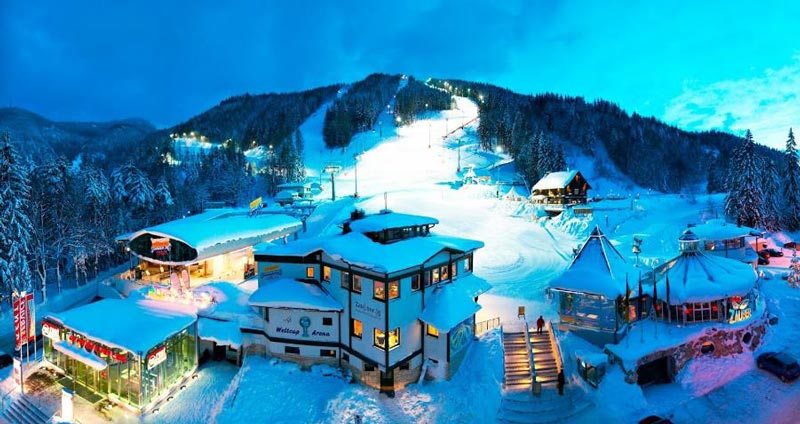
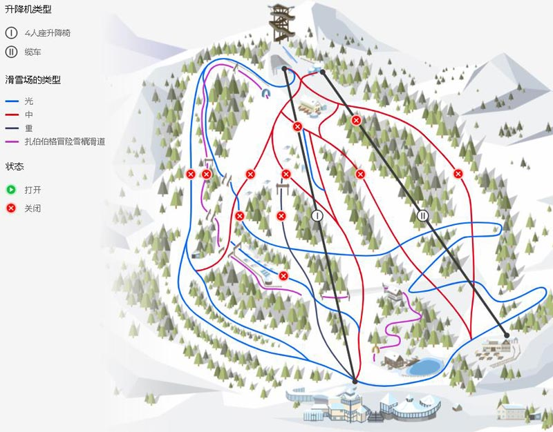
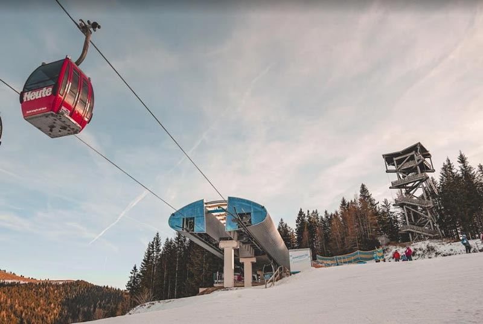
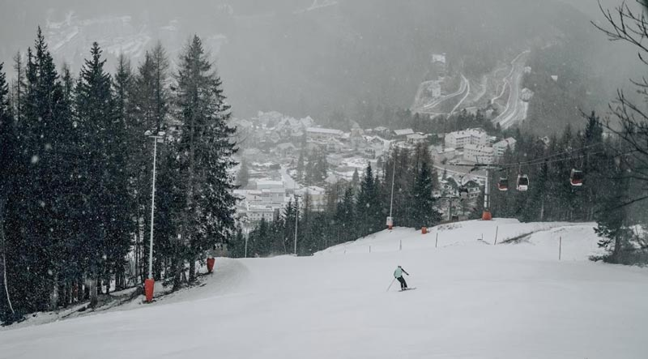
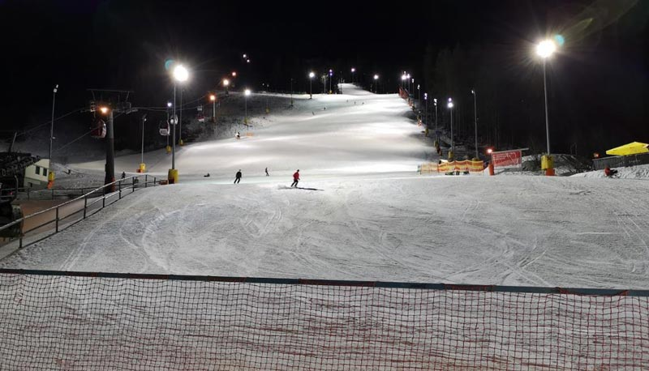

滑雪场图片参考：





时间
地点
景点（可以 +/- ）
入住地点
第一天
布达佩斯出发
347公里
格拉茨
Graz
奥地利
格拉茨艺术馆, 宫殿山, 格拉茨主广场, 格拉茨钟楼, Old Town of Graz, Island in the Mur
如全团同意，也可以直接到滑雪场滑雪半日。
第二天
105公里
扎伯伯格
Zauberberg
滑雪
第三天
第四天
299公里到布达佩斯
-
如全团同意，此行程可以增加一天滑雪时间，转换为5天3夜滑雪行程。
滑雪准备和注意事项 可以在滑雪场租滑雪板，滑雪鞋，头盔和滑雪杖。因为雪山上紫外线强、气温低，请务必注意： 1、滑雪是一项高消耗的运动，在进行滑雪运动前请补充好所需热量，随身携带一些高热量零食； 2、请随身携带护照、居留（在有效期）或身份证等合法证件，准备少量现金或银行卡支付门票、购餐等费用； 3、进行滑雪运动时一定要戴手套，最好戴专业滑雪手套，尽量不戴外表为棉、毛制手套，避免划伤和冻伤；保暖防护设备自行准备，包含：手套、帽子、围脖、滑雪袜、消毒酒精、口罩、防晒霜、个人药品。 4、请随身携带滑雪镜或太阳镜。视力不好的滑雪者，不要戴隐形眼镜和金属边框眼镜滑雪，尽量配戴树酯制造的眼镜，在进行滑雪运动时尽量配戴专业滑雪镜，避免雪盲； 5、雪山上温度一般比城市温度低2-5摄氏度，请务必内穿秋裤保暖。滑雪当天不要穿连裤袜等不具有保暖功能的衣服； 6、有轻微防水功能的外套和长裤：外套不易过长，以免影响运动；滑雪过程中积雪可能会把裤子弄湿，裤子若不防水，可携带牛仔裤替换，以防感冒； 7、滑雪当日，当无法有效地控制速度和平衡时，应主动向侧后方摔倒； 8、建议携带双肩背包，这样可以在滑雪时随身携带鞋子和其它个人物品，减少放在租赁店遗失的可能； 9、滑雪时午餐请大家自理，滑雪场一般均设有餐厅。
格拉茨是奥地利共和国的第二大城市。城市位于两侧穆尔的格拉茨盆地。表面：127.48平方千米。格拉茨市区将近64万名居民，是仅次于维也纳和林茨都市区的奥地利第三大都市区，一直是奥地利增长最快的大都市区。由于位于欧洲文化的交汇处，又具有数百年的悠久历史，自1379年起，格拉茨就成为内奥的首都，在阿尔卑斯亚得里亚海地区获得了巨大的影响，成为国际文化中心。直到现在，也可以通过旧城区的建筑看到罗马式和斯拉夫式的文化。它被选为人权城市，并获得了欧洲奖。1993年“欧洲文化月”在格拉茨举行。1999年12月1日，格拉茨的旧城区被联合国教科文组织列入世界文化遗产名录。2003年格拉茨是欧洲文化之都。2012年奥地利的“享乐之都”，2015年它成为欧洲改革城市。格拉茨老城和艾肯贝格城堡是自1999年和2010年以来被联合国教科文组织列为世界遗产。自2011年3月起，格拉茨就被联合国教科文组织列为设计之都，成为创意城市网络的一部分。同时也是一个拥有近60,000 名学生的大学城，格拉茨-塞考教区的主教区，曾经的哈布斯堡王室的所在地。
景点：格拉茨城堡 格拉茨城堡坐落在老城区的东面，内城区第一区的霍夫加斯，靠近格拉茨大教堂，建于1438年。它与格拉茨大教堂，费迪南德二世的陵墓和前耶稣会学院一起，形成了一个建筑群，也被称为格拉茨城冠。城市的王冠形成了旧城区的东端。该城堡通过有盖走廊与施洛贝格城堡相连。从1564年起，格拉茨成为内奥的首都，这座城堡成为内奥大公的所在地。并被重建和扩大。 1545年费迪南德一世将建筑大师多梅尼科·戴尔·阿利奥带到格拉茨，主要负责重建城市。1554年他在城堡中建造了文艺复兴时期的门户和楼梯。1564年格拉茨通过哈布斯堡王朝的继承分区成为奥地利内部各州的首府。为了给宫廷空间，1570年查尔斯二世大公在礼拜堂和城堡大门之间的东方中世纪城墙上方建造新的宫殿建筑，并引进了外来植物，还在动物园里放了狮子，老虎和熊，同时建造了三口井确保城堡饮用水的供应。大约在1600年，费迪南德二世大公在西南“腓特烈堡”增设了一个侧翼，即所谓的“费迪南德的建筑物”。它包含了城堡的宝库，一个艺术室和一个图书馆。
斐迪南二世大公于1619年成为皇帝并移居维也纳时，这座城堡失去了其意义，仅用作帝国宿舍。1728年城堡的建筑结构重新翻修。1783年约瑟夫二世皇帝任命这座城堡为地方政府所在地并成为官员的城堡，玛丽亚·特蕾莎将城堡中的所有艺术品，书籍和档案移交给维也纳，致使城堡不再具有昔日的辉煌。在随后的几个世纪中，翻新工程进行了几次。自1922年以来，格拉茨城堡一直是施蒂里亚州长的所在地。直到2003年施蒂里亚州投资了超过600万欧元用于格拉茨城堡和乡村别墅的修复。修复翻新中，发现了9至10名来自中世纪的男子的遗体，还发现了哥特时代晚期的彩绘壁画。
景点：格拉茨老城区 格拉茨的大部分景点都位于老城区。它是包含具有城堡山和城市公园的历史悠久的部分，由于其对历史建筑的独特保存及其屋顶景观，1999年市中心成为联合国教科文组织世界遗产格拉茨市-历史中心和艾肯贝格宫的一部分 。该市中心主要是步行区，设有市政厅，购物中心和街边市场，博物馆和美术馆，以及无数带有受欢迎户外用餐区的餐厅，格拉茨的所有电车线路都通过该市。这使内城成为格拉茨最繁忙的地区之一。老城区外还有许多历史建筑，特别是在圣伦纳德（II区）和盖伊多夫（III区）地区。
景点：埃根博格城堡 埃根博格宫殿位于省会格拉茨的西部，普拉布茨山脚，是施蒂利亚州最大和最重要的巴洛克式宫殿建筑群。凭借其保存完好的原始家具，历史悠久的宽敞的景观花园以及位于城堡中的乔安娜世界博物馆的藏品，就可以称为是奥地利最有价值的文化资产之一。宫殿公园的北部是行星花园和与其相邻的考古博物馆，钱币收藏和旧画廊被安置在了城堡。埃根博格城堡似乎是一幢17世纪建筑，但建筑核心的大部分可追溯至中世纪晚期和近代早期。作为贵族埃根博格家族的祖传所在地，其建筑和家具的历史表明施蒂利亚州曾经最强大的家族的变化。2010年这座城堡被添加到联合国教科文组织现有的世界遗产格拉茨市-历史中心和艾肯贝格宫的一部分。
景点：格拉茨钟楼
格拉茨钟楼是一个28米高的钟楼，是格拉茨的地标，其表盘直径超过5米，并配有镀金指针。格拉茨钟楼的核心大概可以追溯到13世纪，是最古老的建筑之一。大约1265年塔曾是堡垒的一部分。1569年完成了翻新，安装了带有三个大表盘的第一座钟。表盘上有一个木制的城垛在塔周围，那里看到整个市中心。1712年北侧增设了另一个钟面，新的时钟与今天常见的相反，时针较大，从远处可正确读取小时数。 1809年拿破仑军队在第五次联合战争中围攻格拉茨时，钟楼被击中，但并未受到严重损坏。城堡山没有被征服，但还是落入了敌人的手中。 如今塔中仍然保留了三个钟，其中小时钟是格拉茨（1382）最古老的钟，每隔一小时发出一声。2003年，格拉茨成为“ 欧洲文化之都 ”时，钟楼被赋予了所谓的“影子”。这是一座黑色的钢制双塔，由艺术家马库斯·威尔夫林按比例复制的“时钟塔的影子”，目的在于提醒格拉茨纳粹的阴暗一面。2008年-2011年分步骤对钟楼进行了木制城垛的装修和表盘和钟针的翻新。
景点：格拉茨城堡山 格拉茨城堡山早在公元前8世纪就有定居点。1125年左右，在裸露的岩石上建造了一座罗马式城堡，后来以哥特风格进行了扩建，从1544年根据多米尼科•德尔阿利奥的计划改建为文艺复兴式堡垒。 格拉茨城堡山施洛伯格酒店位于一个巨大的白云岩石，穆尔的岸边，并形成了历史悠久的格拉茨老城区的核心，在格拉茨的主要广场上高123 m。除了格拉茨的地标钟楼外，还有列塞尔钟钟楼，施洛伯格炮台，超过100 m深的土耳其喷泉，城堡的所有遗物和许多较小的艺术品，作为格拉茨古城核心的一部分，已列为联合国教科文组织世界遗产，城市格拉茨-历史中心和艾根伯格宫。在吉尼斯世界纪录中被列为有史以来最坚固的堡垒。 拿破仑也无法在19世纪初征服它。直到1809年他占领维也纳并威胁要毁坏首都时，被勒索的格拉茨投降，所有的要塞几乎被夷平，仅保留了钟楼。 1925年年初城堡山500 瓦 - 发射台建成，除了35米高的格子结构外，钟楼还配有天线。1929年创造了当代的替代品。 二战期间，建造了一个隧道系统，长度为6.3公里，20个出入口约12,000平方米的可用空间，其中一部分作为指挥中心。防空掩体可容纳5万人及军队医院。隧道系统与自然洞穴相连，直到1944年为止鲜为人知。